Document Class: Deliberative Documents
For the Deliberative Documents Class, "resolution" and "decision" were modelled individually because of their relevance in the context of the UN normative documents and also because their structure may also be quite different.
Caveat. The definitions below are to be considered only as a general description with the sole purpose of providing an indication of the types of documents that may belong to each class and subclass.
UN document class | Deliberative documents |
subclass | Resolution Description: formal expressions of the will of a principal or subsidiary organ or other empowered bodies. |
AKN4UN
document class | AKN | AKN4UN | UN Document | AKN4UN |
documentType
mandatory | subtype
mandatory | sub-class | @name subclass mandatory |
| value is prescribed | | value is suggested |
<statement> | deliberation | resolution | resolutionDraft |
resolution |
function | Function formal expressions of the opinion or will of a principal or subsidiary organ or other empowered bodies intended to express the opinions and will of the Members, provide policy recommendations and assign mandates and adopt codes, guidelines, procedures, recommendations, amendments to codes, conventions, etc. Structure open structure documents, sometimes articulated in hierarchical structures in which the text is subdivided into higher and lower subdivisions, generally including a preamble and operative paragraphs. |
authors | UN principal and subsidiary organs, funds, programs, specialized agencies and other entities’ deliberative bodies. |
editors | Secretariats of the assemblies, councils, conferences, boards, or other entities. |
Caveat. What follows is the modelling and description of the "Resolution Document Class" which is the logical component of the resolution publication in which a "resolution" may appear during its lifecycle.
The Resolution Document Class is not specific to the resolution of any organization in particular. It will list all the possible characteristics that a resolution may have across all the UN organizations, since the objective is to cover all the variances that may exist. The description and modelling of the publications in which a resolution may be published is presented in the "Publication Document Class".
The Resolution Document Class will have to be localised by the different organizations, based on their specific editorial and style traditions, by selecting only the elements that are required to model all the relevant structural and semantic parts of any specific typology of resolutions.
Please note that the XML examples provided in the next sections should not be considered complete. Examples show only the essential structural elements of the mark-up and only the ones relevant in a specific context without any semantic or presentation markup in order to keep the XML "humanly’" readable.
Description
The structure of a resolution may have the following elements:
Identification part Title, proponent authority, identification numbers, date of approval, etc. | always present |
Preamble One or more paragraphs stating purpose, aims, and justification of a resolution. | not always present. |
Operativeparagraphs One or more paragraphs detailing the resolution. | always present. |
Closing formula e.g. dates, signatures, formulas, etc. | not always present. |
Annexes Annexes / Attachments that supplement the content of the document. | not always present. |
Modelling
This section presents the most important Akoma Ntoso elements and attributes necessary to model the general structure of a resolution.
document type | <akomaNtoso>
<statement contains="originalVersion" name="{AKN4UN:subclass}"> |
metadata | <meta>
<identification source="#{manifestationAuthor}"> </identification>
</meta> |
identification part | <preface> (...) </preface> |
preamble | <preamble> (...) </preamble> |
operativeblock | <mainBody> (...) </mainBody> |
closing block | <conclusions> (...) </conclusions> |
annexes | <attachments> (...) </attachments> |
| </statement>
</akomaNtoso>
|
Examples
Below are some practical examples of the Akoma Ntoso mark-up of the main blocks of the resolution.
document type | <akomaNtoso>
<statement contains="originalVersion" name="resolution"> |
identification part | <preface> (...) </preface> | 
|
preamble | <preamble> (...) </preamble> | |
operativeblock | <mainBody> (...) </mainBody> | 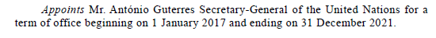 |
closing block | <conclusions> (...) </conclusions> | |
| </statement>
</akomaNtoso> |
Example 2 with annex
document type | <akomaNtoso>
<statement contains="originalVersion" name="resolution"> |
identification part | <preface> (...) </preface> | 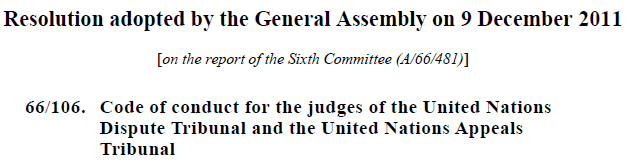 |
preamble | <preamble> (...) </preamble> | 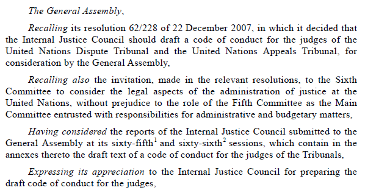 |
operativeblock | <mainBody> (...) </mainBody> | 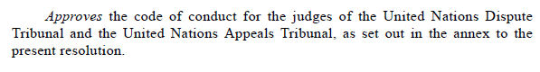 |
closing block | <conclusions> (...) </conclusions> | |
annexes | <attachments> (...) </attachments> | 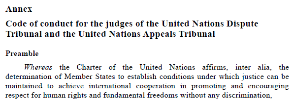 |
| </statement>
</akomaNtoso> |
Identification part: <preface>
The identification part <preface> </preface> is meant to include any matter found from the very beginning of a document up to where the <preamble> begins. It may contain information related to the title of the document, proponent authority, identification numbers, date of approval, and the like. Typically resolutions start with some or all the information listed below, not necessarily in the same order:
document type
document authority
identifier
title, usually preceded or followed by the resolution’s identifier
Modelling <preface>
For information about element specific usage, see 1.2 <preface>.
Examples
|
text | 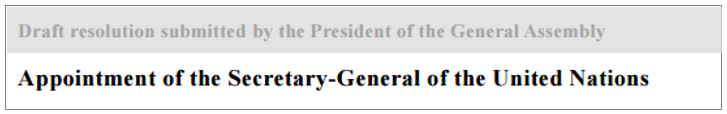 |
modelling | <preface>
<p>
<docTitle>Appointment of the Secretary-General of the United Nations
</docTitle>
</p>
</preface> |
|
text | 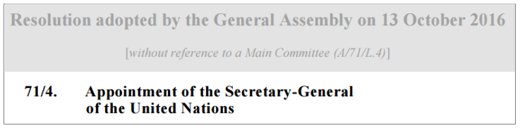 |
modelling | <preface>
<p>
<docNumber>71/4</docNumber>.
<docTitle>
Appointment of the Secretary-General of the United Nations
</docTitle>
</p>
</preface> |
|
|
text |
|
modelling | <preface>
<p>
<docType refersTo="#resolution">Resolution</docType>
<docNumber> 4/2015</docNumber>
<docTitle>Antimicrobial Resistance</docTitle>
</p>
</preface> |
|
text | 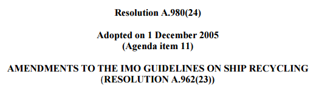 |
modelling | <preface>
<container name="authorial">
<p>
<docType>Resolution</docType>
<docNumber>A.980(24)</docNumber>
</p>
</container>
<container name="edited">
<p> Adopted on <docDate date="2005-12-01">1 December 2005 </docDate> (<ref href="/akn/un/{documentIRIparts}"
>Agenda item 11</ref>) </p>
</container>
<container name="authorial">
<p>
<docTitle>AMENDMENTS TO THE IMO GUIDELINES ON SHIP RECYCLING (<ref href="/akn/un/{documentIRIparts}"
>RESOLUTION A.962(23)</ref>)</docTitle>
</p>
</container>
</preface> |
note | The @name attribute on the <container> element, simply gives a name to the generic <container> element. We do not prescribe a name for this in the rules, as the choice of naming them may be different across organizations, and even the way the content is grouped and structured may vary across documents and across organizations. In the above example the @name attribute has been used to identify some blocks of text as authorial, and others as editorial. |
|
|
text | 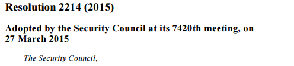 |
modelling | <preface>
<container name="publicationInfo">
<p>
<docType>Resolution </docType>
<docNumber>2214(2015)</docNumber>. </p>
</container>
<container name="publicationHeading">
<p> Adopted by the Security Council at its 7420th Meeting on 27 March 2015 </p>
</container>
</preface> |
notes | |
| |
Introductory block: <preamble>
One or more paragraphs stating purpose, aims, and justification of a resolution. They may refer to the legal basis, other resolutions and statements, recognise efforts of other bodies or statements on the topic, its significance and its impact.
The preambular part usually begins with an enacting formula, followed by unnumbered paragraphs.
The preamble typically begins with a present, past or perfect participle or participial phrase in italics, and ends with a comma. Preambular paragraphs may be subdivided as follows:
First-degree sub-paragraphs: e.g. identified by lower-case letters between parentheses.
Second-degree sub-paragraphs: e.g. identified by lower-case roman numerals between parentheses.
Note: the styles may vary according to the language and organization.
Irregular structures
Please note the following irregular cases:
No preambular paragraph. There are resolutions, e.g. resolutions adopting a declaration, that do not have any preambular paragraphs.
More than one preambular parts. There are resolutions that have more than one "preambular parts" with related operative clauses.
Modelling <preamble>
For information about element specific usage, see section 1.4 <preamble>.
No preambular paragraph
The case of "no preambular paragraph" will be modelled including only the enacting formula in the <preamble>, like this:
<preamble>
<formula name="enactingFormula">
<p>The General Assembly,</p>
</formula>
</preamble>
More than one preambular parts
The case of "more than one preambular parts" with related operative clauses happens when text similar in language and semantic to the preamble appears in the body / content of the document.
Even if they are actually in the "body" part of the document, we deal with them here because of their being actually semantically "preambular". The preambular parts in the body may be identified by the language they use, usually the English sentence usaully starts with a verb in the present-participle form ("Having", "Affirming", "Endorsing"…).
To handle these cases of preambular parts in the body of a document the <crossHeading> element must be used, even if the <block> element is very similar to <crossHeading> because these preambular parts happen to be within AKN hierarchical sections in the body of a resolusion, and in this context only other hierarchical elements are allowed by Akoma Ntoso.
The <crossHeading> element needs to be qualified with the @refersTo="#preamble", to explicitly indicate that it is preambular. <crossHeading> is typically used to mark preambular paragraphs.
<crossHeading eId="sec_1__crossHeading_1" refersTo="#preamble">
Having considered the report of
the Secretary-General on the request for a subvention to the
Extraordinary Chambers in the Courts of Cambodia and the related
report of the Advisory Committee on Administrative and Budgetary Questions
</crossheading
The ontological concept definition of preamble may look like this:
<meta>
<references>
<TLCConcept eId="preamble" href="/akn/ontology/concept/un/preamble" showAs="preamble"/>
</references>
</meta>
Examples
|
example | 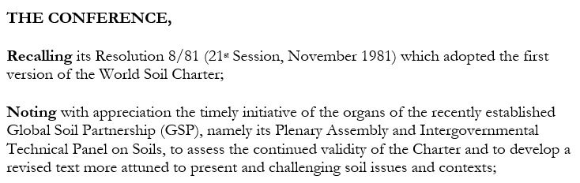 |
modelling | <preamble>
<formula name="enactingAuthority">
<p>THE CONFERENCE,</p>
</formula>
<container name=""> <block name="preamble" eId="block_1"> Recalling its Resolution 8/81 (21st Session, November 1981) which adopted the first version of the World Soil Charter;</block> <block name="preamble" eId="block_2">Noting with appreciation the timely initiative of the organs of the recently established Global Soil Partnership (GSP), namely its Plenary Assembly and Intergovernmental Technical Panel on Soils, to assess the continued validity of the Charter and to develop a revised text more attuned to present and challenging soil issues and contexts; </block> </container> </preamble> |
|
|
example | 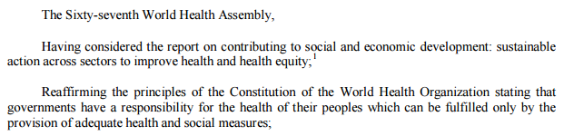 |
modelling | <preamble>
<formula name="enactingAuthority">
<p>The Sixty-seventh World Health Assembly, </p>
</formula>
<container name=""> <block name="preamble" eId="block_1">Having considered the report on contributing to social and
economic development: sustainable action across sectors to improve health and health equity; </block>
<block name="preamble" eId="block_2">Reaffirming the principles of the Constitution of the World
Health Organization stating that governments have a responsibility for the health of their
peoples which can be fulfilled only by the provision of adequate health and social
measures;</block> <container> </preamble> |
|
example | 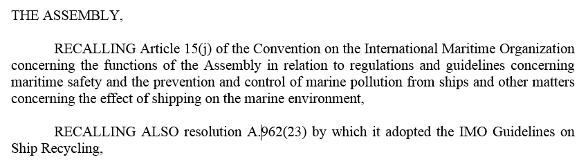 |
modelling | <preamble>
<formula name="enactingAuthority">
<p>THE ASSEMBLY,</p>
</formula>
<container name=""> <block name="preamble" eId="block_1">RECALLING Article 15(j) of the Convention on the
International Maritime Organization concerning the functions of the Assembly in relation to
regulations and guidelines concerning maritime safety and the prevention and control of
marine pollution from ships and other matters concerning the effect of shipping on the
marine environment,</block>
<block name="preamble" eId="block_2">RECALLING ALSO resolution A.962(23) by which it adopted the
IMO Guidelines on Ship Recycling,</block> <container> </preamble> |
Irregular structures
No preambular paragraph
|
example | 
|
modelling | <preamble> <formula name="enactingAuthority">
<p>The General Assembly,</p>
</formula>
</preamble>
<mainBody>
<paragraph>
<content>
<p> Adopts the following outcome document of the United Nations summit for the
adoption of the post-2015 development agenda </p>
</content>
</paragraph> </mainBody> |
note | In this example, the body of the document has only a paragraph of text. The text needs to be wrapped in a structural tag, so we use <paragraph> and place the text content inside it. The <p> in AKN is a generic inline tag, and should always appear inside a container element. In this case we use the <paragraph> to express the structural semantic. |
| |
More than one preambular parts
Multiple preambular parts First part |
|
Second part
where the preambular text is repeated mixed with the operative text | 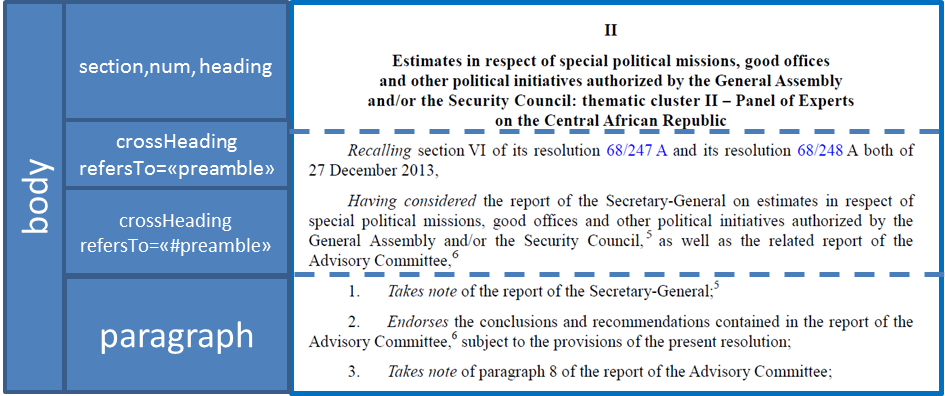 |
| |
text | 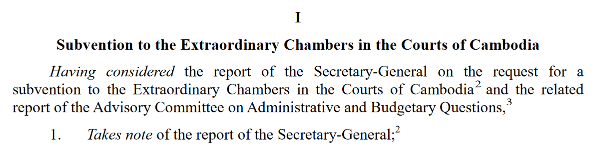 (omissis) 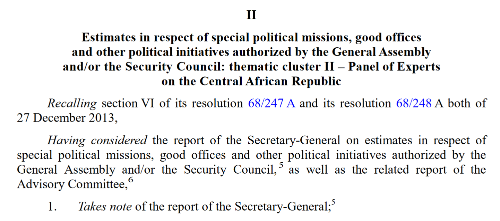 |
modelling | <mainBody>
<section eId="sec_I">
<num>I</num>
<heading>Subvention to the Extraordinary Chambers in the Courts of Cambodia</heading>
<crossHeading refersTo="#preamble"> Having considered the report of the
Secretary-General on the request for a subvention to the Extraordinary Chambers in
the Courts of Cambodia2 and the related report of the Advisory Committee on
Administrative and Budgetary Questions,3 </crossHeading>
<paragraph eId="sec_I__para_1">
<num>1.</num>
<content>
<p>Takes note of the report of the Secretary-General; </p>
</content> </paragraph> </section> (omissis) <section eId="sec_II"> <num>II </num>
<heading> Estimates in respect of special political missions, good offices and other
political initiatives authorized by the General Assembly and/or the Security
Council: thematic cluster II – Panel of Experts on the Central African Republic </heading>
<crossHeading eId="sec_II__crossHeading_1" refersTo="#preamble"> Recalling section VI of
its resolution 68/247 A and its resolution 68/248 A both of 27 December 2013, </crossHeading>
<crossHeading eId="sec_II__crossHeading_2" refersTo="#preamble"> Having considered the
report of the Secretary-General on estimates in respect of special political
missions, good offices and other political initiatives authorized by the General
Assembly and/or the Security Council, as well as the related report of the Advisory
Committee, </crossHeading>
<paragraph eId="sec_II__para_1">
<num>1.</num>
<content>
<p>Takes note of the reports of the Secretary-General;</p>
</content>
</paragraph>
</section>
</mainBody> |
|
|
|
| <mainBody> <section eId="sec_III">
<num>III</num>
<heading>Progress in the implementation of the organizational resilience management system
and of the recommendations from the after-action review of storm Sandy</heading>
<crossHeading eId="sec_III__crossHeading_1" refersTo="#preamble"> Recalling section II of
its resolution 64/260 of 29 March 2010, section I of its resolution 66/247 of 24
December 2011 and sections II and IV of its resolution 67/254 A of 12 April
2013,</crossHeading>
<crossHeading eId="sec_III__crossHeading_2" refersTo="#preamble"> Having considered the
reports of the Secretary-General on progress in the implementation of the organizational
resilience management system and on progress in the implementation of the
recommendations from the after-action review of storm Sandy, as well as the related
report of the Advisory Committee,</crossHeading>
<paragraph eId="sec_III__para_1">
<num>1.</num>
<content>
<p> Takes note of the reports of the Secretary-General;</p>
</content>
</paragraph>
<paragraph eId="sec_III__para_2">
<num>2. </num>
<content>
<p> Endorses the conclusions and recommendations contained in the report of the
Advisory Committee, subject to the provisions of the present resolution;</p>
</content>
</paragraph>
<title eId="sec_III__title_A">
<num>A.</num>
<heading>Progress in the implementation of the organizational resilience management
system</heading>
<paragraph eId="sec_III__para_3">
<num>3. </num>
<content>
<p> Welcomes the progress achieved so far in the implementation of the
organizational resilience management system, and looks forward to receiving
information on the next phases of implementation;</p>
</content>
</paragraph>
</title>
</section> </mainBody> |
|
The operative block <mainBody> </mainBody> is meant to include any matter found after the <preamble> up to where the <conclusion> or <attachments> or the end of the document. It contains one or more paragraphs stating the opinion of the organ or the action to be taken.
The main content is organized in "operative paragraphs":
Each operative paragraph begins with an operative verb (or phrase).
Operative paragraphs are numbered with Arabic numerals, but a single operative paragraph is not numbered.
Each paragraph may have sub-paragraphs.
Headings and sub-headings may be added. There are several variations in structure with no fixed hierarchy even within an organization.
Subdivision: some operative sections may be subdivided in parts, sections, etc.
There are resolutions that have subdivisions only in the "operative paragraphs".
There are resolutions that have subdivisions in the preamble that may continue in operative paragraphs.
<mainBody>
The <mainBody> element may contain all types of AKN groups of elements. In the conctext of Document Class Deliberative Documents only hierarchical and block containers elements are allowed. See the table below:
AKN4UN
Doc Class | AKN
document type | body element | Supported elements |
Deliberative Documents | <statement> | <mainBody> | Element group: hierElements alinea, article, book, chapter, clause, division, hcontainer, indent, level, list, paragraph, part, point, proviso, rule, section, subchapter, subclause, subdivision, sublist, subparagraph, subpart, subrule, subsection, subtitle, title, tome, transitional |
Element group: blockElements block, blockContainer, blockList, foreign, ol, p, table, tblock, toc, ul |
For the content model used by hierarchical and block containers please see the relevant sections.
Examples
|
text | 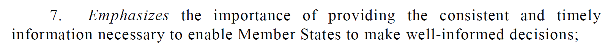 |
modelling | <paragraph eId="para_7">
<num>7. </num>
<content>
<p>Emphasizes the importance of providing the consistent and timely information
necessary to enable Member States to make well-informed decisions;</p>
</content>
</paragraph> |
|
|
text | 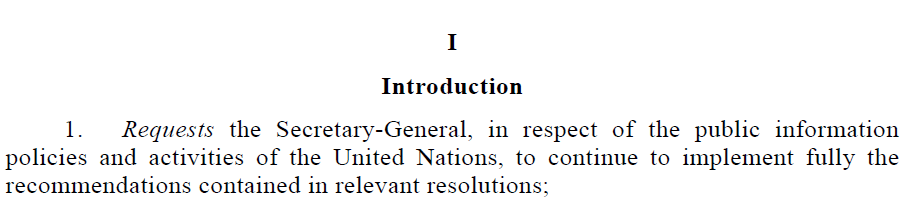 |
modelling | <section eId="sec_I">
<num>I</num>
<heading>Introduction</heading>
<paragraph><num>1.</num>
(...)
</paragraph>
</section> |
|
Text |
|
modelling | <division eId="part_A__sec_I__division_1">
<num>I</num>
<heading>United Nations website</heading>
<paragraph>
<num>65.</num> (omiss)
</paragraph> (omiss)
</division> |
note | The <division> element groups different paragraphs with a heading. |
|
text | 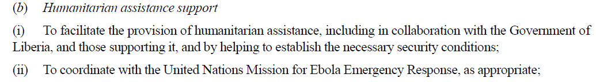 |
modelling | <list eId="part_A__sec_I__division_1__para_67__list_1">
<point eId="part_A__sec_I__division_1__para_67__list_1__point_b">
<num>(b)</num>
<heading>Humanitarian assistance support</heading>
<list eId="part_A__sec_I__division_1__para_67__list_1__point_b__list_1">
<point eId="part_A__sec_I__division_1__para_67__list_1__point_b__list_1__point_i">
<num>(i)</num>
</point>
</list>
</point>
</list> |
|
|
text |  |
modelling | <paragraph eId="para_8">
<num>8. </num>
<list eId="para_8__list_1">
<intro eId="para_8__list_1__intro">
<p> The qualifications are as follows: </p>
</intro>
<point eId="para_8__list_1__point_a">
<num>(a)</num>
<heading>Education. </heading>
<content>
<p>Advanced university degree (master’s degree or equivalent) in business
management, economics, finance, banking and portfolio investment management
or related fields; </p>
</content>
</point> <paragraph eId="para_8"> <num>8. </num> <list eId="para_8__list_1"> <intro eId="para_8__list_1__intro"> <p> The qualifications are as follows: </p> </intro> <point eId="para_8__list_1__point_a"> <num>(a)</num> <heading>Education. </heading> <content> <p>Advanced university degree (master’s degree or equivalent) in business management, economics, finance, banking and portfolio investment management or related fields; </p> </content> </point> <point eId="para_8__list_1__point_b"> <num>(b)</num> <heading> Work experience. </heading> <list> <intro> <p class="concatenated">Over 20 years of proven progressively responsible experience in the management of economic, social security and/or financial policies and activities for governmental or intergovernmental organizations or for substantial private concerns, including a proven track record of extensive relevant experience in the management of the investment of complex portfolios of assets of various classes, such as pension funds, including their risk management, and in financial markets.</p> <p class="concatenated">Demonstrated direct knowledge of and experience in managing financial, economic and investment policies, including:</p> </intro> <point> <num>(i) </num> <content> <p>Defining and overseeing investment policy for substantial and diversified investment portfolios having long-term return objectives, including policies for investment objectives, risk appetite and tolerance, the risk framework, the investment milieu, restrictions on investments and social responsibility considerations;</p> </content> </point> </list> </point> </list> </paragraph> |
|
text | 
|
modelling | <part eId="part_I">
<num>Part I</num>
<heading>Overall policymaking, direction and coordination</heading>
<section eId="part_I__sec_1">
<num>Section 1</num>
<heading>Overall policymaking, direction and coordination</heading>
<paragraph eId="part_I__sec_1__para_19">
<num>19. </num>
<content>
<p> Takes note of paragraphs I.11 and I.46 of the report of the Advisory
Committee, and approves the establishment of the four posts proposed by the
Secretary-General for the Office of the Special Representative of the
Secretary-General on Violence against Children;
</p>
</content>
</paragraph>
</section>
</part> |
|
Irregular structures
Resolutions issued under the same number
Some resolutions issued under the same number and identified with a capital letter may be issued separately (e.g.: A/RES/68/247 and A/RES/68/247 B).
Those issued in the same document (see A/RES/69/96 A-B) will have to be modelled as in the following example.
|
text | 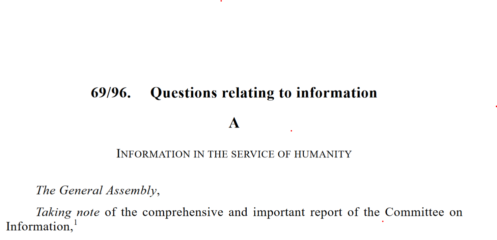 (omissis) 
|
modelling | In this document, the <documentRef> element allows referencing individual logical components. In this particular resolution, the logical components are the two Resolutions A and B, which are components of the main resolution. So <documentRef> provides a reference to each of the individual Resolutions, which are described in the <components> section of the document (as they are logical components of the main Resolution). There are two <component> definitions in <components> each corresponding to a Resolution. We use <documentRef> to provide a reference to each individual resolution which is part of the main Resolution, however <documentRef> is not merely a reference, and it implies that the contents of the referenced document are included from that point onwards in the document body. For visual/print purposes, this will not be evident to the reader / end-user, since to them it will appear like a continuous document in the body of the main resolution. <akomaNtoso>
<documentCollection name:”publication”>
<meta/>
<preface>
<p>
<docNumber>69/96.</docNumber>
<docTitle>Questions relating to information</docTitle>
</p>
</preface>
<collectionBody> <component>
<documentRef eId="compRef_1" src="#comp_1" showAs="Resolution A" />
<documentRef eId="compRef_2" src="#comp_2" showAs="Resolution B" /> </component>
</mainBody>
</documentCollection>
<components>
<component eId="comp_1">
""""resolution A
</component>
<component eId="comp_2">
""""resolution B
</component>
</components>
</documentCollection>
</akomaNtoso>
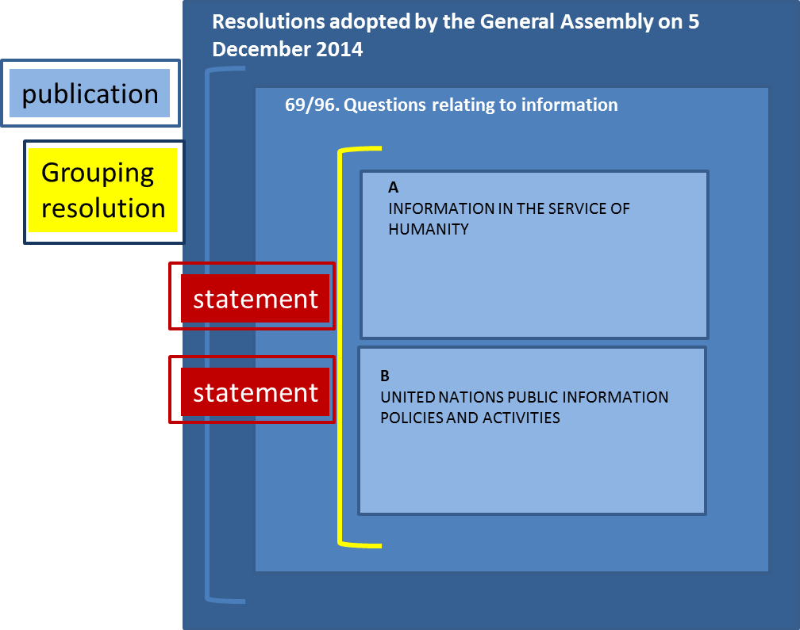In the components part of the same document, we model each fragment of the two grouped documents: |
Resolution A | <akomaNtoso>
<statement name="resolution">
<meta>….. </meta>
<preface>
<p>
<docNumber>A</docNumber>
</p>
<p>
<docTitle>INFORMATION IN THE SERVICE OF HUMANITY</docTitle>
</p>
</preface>
<preamble>
<formula name="enactingAuthority">
<p>The General Assembly, </p>
</formula>
<block name="#preamble"> Taking note of the comprehensive and important report of the
Committee on Information, </block> </preamble>
<mainBody>
<list eId="list_1">
<point eId="list_1__point_e">
<content>
(omissis)
</content>
</point>
<point eId="list_1__point_f">
<content>
<p>(f) To provide full support for the International Programme for the
Development of Communication of the United Nations Educational,
Scientific and Cultural Organization, which should support both public
and private media. </p>
</content>
</point>
</list>
</mainBody>
<conclusions>
<p>
<event refersTo="#plenaryMeeting">
64th plenary meeting
</event>
<date date="2014-12-05" refersTo="#adoptionDate">5 December 2014</date>
</p>
</conclusions>
</statement>
</akomaNtoso> |
Resolution B | <?xml version="1.0" encoding="UTF-8"?>
<akomaNtoso>
<statement name="resolution">
<meta>……. </meta>
<preface>
<p>
<docNumber>B</docNumber>
</p>
<p>
<docTitle>UNITED NATIONS PUBLIC INFORMATION POLICIES AND ACTIVITIES</docTitle>
</p>
</preface>
<preamble>
<formula name="enactingAuthority">
<p>The General Assembly, </p>
</formula>
<block name="#preamble"> >Emphasizing that the Committee on Information is its main
subsidiary body mandated to make recommendations to it relating to the work of the
Department of Public Information of the Secretariat,</block>
</preamble>
<mainBody>
<paragraph eId="para_103">
<content>
<p>103. Decides to include in the provisional agenda of its seventieth session
the item entitled "Questions relating to information". </p>
</content>
</paragraph>
</mainBody>
<conclusions>
<p>
<event refersTo="#plenaryMeeting">
64th plenary meeting
</event>
<date date="2014-12-05" refersTo="#adoptionDate">5 December 2014</date>
</p>
</conclusions>
</statement>
</akomaNtoso> |
notes | Note that the two resolutions, A and B, inside the main resolution 69/96, have their own numbering of paragraphs and sections independent of each other. |
|
Endorsed/adopted document ebedded in the body of the resolution
In some resolutions, documents that a resolution may adopt or endorse (e.g. declarations, policy document, etc.) may appear at the end of an operative clause (or in the middle of an operative clause) but before the closing formula. These documents all retain their independent structures and formats.
In these cases, we use <embeddedStructure> and <documentRef> for referencing the whole structure of the embedded document, and continue the contents of the document after this. In the table below we provide an example of this scenario.
If the document that is endorsed/adopted is instead after the closing formula, it is structurally considered an annex. Please see the section Annex/attachments ahead.
|
text |
(omissis) 
|
modelling | The publication contains resolution 70/1. The Resolution 70/1 contains the Annex of Resolution no: 69/315, page 1 embedded in the content, not as an annex because it falls in between the operative clause "Adopt …." And the closing fornula. |
| |
|
|
| |
Preface of the resolution 70/1 | <preface>
<p>
<docNumber>70/1.</docNumber>
<docTitle>Transforming our world: the 2030 Agenda for Sustainable Development</docTitle>
</p>
</preface> |
| |
| |
Preamble | <preamble>
<formula name="enactingAuthority">
<p>The General Assembly, </p>
</formula>
</preamble> |
| |
| 
(omissis) 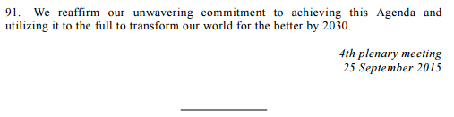 |
Body | <mainBody>
<paragraph eId="para_1">
<content>
<p> Adopts the following outcome document of the United Nations summit for the
adoption of the post-2015 development agenda: <embeddedStructure> <documentRef eId="docref_1" showAs="Transforming our world: the 2030 Agenda for Sustainable Development" ref="/akn/un/collection/publication/ga/2015-09-15/A-RES-69-315/!annex "/>"" </embeddedStructure> (omissis) </p>
</content>
</paragraph>
<conclusions>
<p>
<event refersTo="#comp_1__meeting">
<location refersTo="#comp_1__plenaryMeeting4Location">
<quantity refersTo="#comp_1__meetingNumber" eId="quantity_1">4th</quantity>
plenary meeting</location>
</event>
<docDate date="2015-09-25" refersTo="#adoptionDate">25 September 2015</docDate>
</p>
</conclusions> <componentRef src="#addendum" showAs="Addendum"/> </mainBody> |
| We use <embeddedStructure> because the Annex of resolution A/RES/69/315 is referenced and imported into the content of this resolution (70/1). The inclusion happens mid content (i.e. in the middle of a paragraph), and <embeddedStructure> allows embedding document structures anywhere inside content paragraphs. The additional implication is that the styling and header and footer of the main holding resolution (70/1) applies on even the document referenced by <embeddedStructure>. |
| |
| |
text | |
modelling | <component eId="addendum">
<doc name="addendum">
<meta>…… </meta>
<preface>
<p>
<docTitle>Instruments mentioned in the section entitled "Sustainable Development
Goals and targets"</docTitle>
</p>
</preface>
<mainBody>
<p>World Health Organization Framework Convention on Tobacco Control (United
Nations, Treaty Series, vol. 2302, No. 41032)</p>
<p>Sendai Framework for Disaster Risk Reduction 2015–2030 (resolution 69/283, annex
II)</p>
<p>United Nations Convention on the Law of the Sea (United Nations, Treaty Series,
vol. 1833, No. 31363)</p>
<p>"The future we want" (resolution 66/288, annex)</p>
</mainBody>
</doc>
</component> |
note | This is a block of text with a heading found at the end of the document. It is like an end-note, but is placed in the content of the body. So this has been modelled as a generic document which may be included in the body via <componentRef> |
|
Closing formula: <conclusions>
The closing formula <conclusions> </conclusions> is meant to include all concluding material (e.g. closing formula(s), date(s) and signature(s). It is placed at the end of the main document, typically before the Annexes, if any. The closing formula may contain the following information:
place where the meeting took place
date of the meeting
date of adoption
session of the meeting
adopting body
type of adoption
Modelling <conclusions>
For information about element specific usage, see section 1.6 <conclusions>.
Examples
|
text |
|
modelling | <conclusions> <container name="">
<p>
<vote by="#securityCouncil" as="#author" choice="#majorityMembers">
<outcome refersTo="#adopted"> Adopted </outcome>
<event refersTo="#meeting1747"> at the 1747th meeting </event>
by
<quantity refersTo="#resolutionForVotes"> 14 </quantity>
votes to
<quantity refersTo="#resolutionAgainstVotes"> none </quantity>. </vote>
</p> </container>
</conclusions> |
note | The votes for and against a resolution are identified using the <quantity> element, and the nature of the vote whether it was for or against is described in a <TLCConcept> and referred to from the appropriate <quantity> element using the @refersTo attribute. |
|
text | 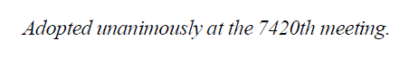 |
modelling | <conclusions> <container name="">
<p>
<vote by="#generalAssembly" as="#author" choice="#majorityMembers"
refersTo="#adoptedUnanimously">
<outcome refersTo="#adoptedUnanimously">Adopted unanimously</outcome></vote> at the 7420th
meetings
</p> </container>
</conclusions> |
|
text | (Resolution adopted by the General Assembly on 9 December 2011)
|
modelling | <conclusions> <container name="">
<p>
<event refersTo="#comp_1__meeting">
<location refersTo="#comp_1__plenaryMeeting82Location">
82nd plenary meeting</location>
</event>
<docDate date="2011-12-09" refersTo="#adoptionDate">9 December 2011</docDate>
</p> </container>
</conclusions> |
note | The <location> tag is optional. It allows additional qualification of the event, by specifying where the event took place e.g. if it took place in the plenary hall or a committee room. |
|
Annexes/Attachments: <attachments>
The annexes block <attachments> </attachments> is meant to include all annexes/attachments to a resolution are generally autonomous documents that the resolution adopts or endorses, e.g. treaties, conventions, tables etc. They all retain their independent structure and formats.
NOTE: Annexes typically appear after the main text of the resolution and are headed with the word Annex (or Attachment) and usually, a title. If there are two or more annexes, they may be identified by Roman numerals.
Modelling <attachments>
For information about element specific usage, see section 1.7 <attachments>.
Examples
This section presents the most important Akoma Ntoso elements and attributes necessary to model the annexes in detail. All elements will have to be contained within the <attachments> element. Annexes imply making a copy of the document being attached. This would suggest a duplication of the content of the document which is the attachment / annex, however this is the nature of attachments, they are snapshots of a document as they were at a point in time. The attachment metadata will allow referencing the original source document that the attachment is from.
|
text
|  |
modelling | <attachments>
<attachment eId="annex_1">
<act name="codeOfConduct">
<meta>
…
<references source="">
<original href="/akn/un/{documentIRIparts}" showAs=""/>
</references>
</meta>
<preface>
<p>
<docType>Annex</docType>
<docTitle>Code of conduct for the judges of the United Nations Dispute Tribunal
and the United Nations Appeals Tribunal</docTitle>
</p>
</preface>
<preamble>
<recitals>
<heading>Preamble</heading>
<recital>
<block name="whereas">Whereas the Charter of the United Nations affirms,
inter alia, the determination of Member States to establish conditions
under which justice can be maintained to achieve international
cooperation in promoting and encouraging respect for human rights and
fundamental freedoms without any discrimination,</block>
</recital>
</recitals>
</preamble>
</act>
</attachment>
</attachments> |
notes | <act name="codeOfConduct"> (…) </act> follows the mark-up of the relevant document type. The FRBRWork of this annex is that of the document containing the annex, with just the part name, i.e. the specification of the component differing at the end of the URI /akn/un/debateReport/debate/date/number/!main/annex_2. To maintain a link with the original source document of the attachment, you will need to add a reference to the original document using the <original> tag in the <references> block of the attachment document. For naming and identifying attachments, see the AKN4UN Naming Convention Section for more information. |
|
Caveat. The definitions below are to be considered only as a general description with the sole purpose of providing an indication of the types of documents that may belong to each class and subclass.
UN document class | Deliberative documents |
subclass | Decision Description: formal action regarding administrative and procedural matters of principal or subsidiary organ or other empowered bodies. They are sometimes also used to record the adoption of a text representing the consensus of the members of a given organ. |
AKN4UN
document class | AKN | AKN4UN | UN Document | AKN4UN |
documentType
mandatory | subtype
mandatory | sub-class | @name subclass mandatory |
| value is prescribed | | value is suggested |
<statement> | deliberation | decision | decisionDraft |
decision |
function | Formal action regarding administrative and procedural matters of principal or subsidiary organ or other empowered bodies. They are sometimes also used to record the adoption of a text representing the consensus of the members of a given organ. Function formal expressions of the opinion or will of a principal or subsidiary organ or other empowered bodies. Structure open structure documents, sometimes articulated in hierarchical structures in which the text is subdivided into higher and lower subdivisions, generally including a preamble and operative paragraphs. |
authors | UN principal and subsidiary organs, funds, programs, specialized agencies and other entity deliberative bodies. |
editors | Secretariats of the assemblies, councils, conferences, boards, or other entities. |
Caveat. What follows is the modelling and description of the "Decision Document Class" (logical decision) in which a "decision" may appear during its lifecycle.
The Decision Document Class is not specific to the decision of any organization in particular. It does list all the possible characteristics that a decision may have across all the UN organizations, since the objective is to cover all the variances that may exist. The description and modelling of the publications in which a decision may be published is presented in the "Publication Document Class".
The Decision Document Class will have to be localised by the different organizations, based on their specific editorial and style traditions, by selecting only the elements that are required to model all the relevant structural and semantic parts of a specific typology of decisions.
Please note that the XML examples provided in the next sections should not be considered complete. Examples show only the essential structural elements of the mark-up and only the ones relevant in a specific context without any semantic or presentation markup in order to keep the XML "humanly’" readable.
Description
The structure of a decision may have the following elements:
Identification part title, identifier, etc. | Always present |
Preamble One or more paragraphs stating purpose, aims, and justification of a decision. | Not always present |
Decision body One or more paragraphs detailing the decision. | Always present |
Closing formula e.g. dates, signatures, formulas, etc. | Not always present. |
Modelling
document type | <akomaNtoso> <statement contains="originalVersion" name="{AKN4UN:subclass}"> |
metadata | <meta> <identification source="#{manifestationAuthor}"> </identification> </meta> |
identification part | <preface> (...) </preface> |
preamble | <preamble> (...) </preamble> |
operativeblock | <mainBody> (...) </mainBody> |
closing block | <conclusions> (...) </conclusions> |
| </statement> </akomaNtoso> |
Examples
Decision without preambular clauses:
document type | <akomaNtoso> <statement contains="originalVersion" name="decision"> |
identification part | <preface> ……… </preface> | 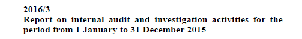 |
preamble | <preamble> ……… </preamble> | |
decision body | <mainBody> ……… </mainBody> | 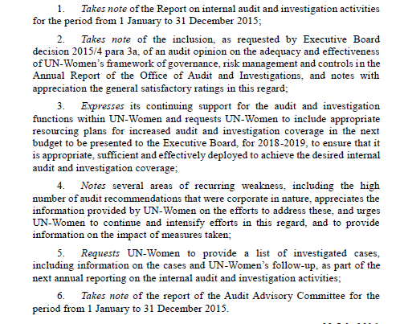 |
closing block | <conclusions> ….. </conclusions> | |
| </statement> </akomaNtoso> |
Decision with preambular clauses:
document type | <akomaNtoso> <statement contains="originalVersion" name="decision"> | |
identification part | <preface> ……… </preface> | | |
preamble | <preamble> ……… </preamble> | 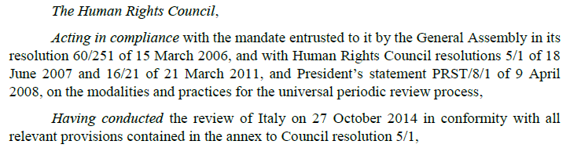 | |
decision body | <mainBody> ……… </mainBody> | | |
closing block | <conclusions> ….. </conclusions> | 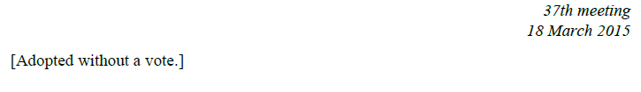 | |
| </statement> </akomaNtoso> |
Identification part: <preface>
The identification part <preface> </preface> is meant to include any matter found from the very beginning of a document up to where the <preamble> begins. It may contain information related to the title, adoption body, date of approval, and the like. All decisions start with some or all the info below, not necessarily in the same order:
identifier
title
Modelling <preface>
For information about element specific usage, see 1.2 <preface>.
|
source | 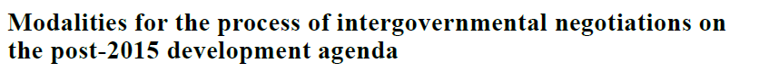 |
modelling | <preface>
<p><docTitle>
Modalities for the process of intergovernmental negotiations on the post-2015 development agenda
</docTitle>
</p>
</preface> |
|
source | 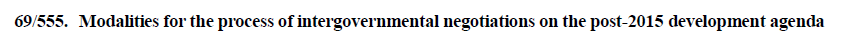 |
modelling | <preface>
<p>
<docNumber>
69/555
</docNumber>
<docTitle>
Modalities for the process of intergovernmental negotiations on the post-2015 development agenda
</docTitle>
</p>
</preface> |
| |
|
source |
|
modelling | <preface>
<p>
<docTitle>
<ref href="/akn/debateReport/{documentIRIparts}">AGENDA ITEM 4.</ref> REPORT BY THE WIPO INDEPENDENT ADVISORY OVERSIGHT COMMITTEE (IAOC) </docTitle> document <docNumber refersTo="#symbol" >WO/PBC/25/2 </docNumber>
</p>
</preface> |
notes | This decision appears within a publication of decisions, and links to the original Agenda Item |
|
source | 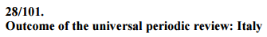 |
modelling | <preface> <p> <docNumber> 28/101. </docNumber> <docTitle> Outcome of the universal periodic review: Italy </docTitle> </p> </preface> |
|
source |
|
modelling | <preface>
<p>
<docTitle>Draft decision VI/… on promoting effective public participation in decision-making </docTitle> Prepared by the <docProponent refersTo="#bureau">
Bureau </docProponent>
</p>
</preface> |
|
| |
source | 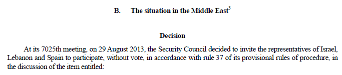 |
modelling | <preface>
<p>
<docType>
Decision
</docType>
</p>
</preface> |
notes | Security Council decisions may be published, grouped under the same heading with no individual specific identification. These decisions also do not have a published "identifier" and they may be referred using the agenda item title, in this case "The situation in the Middle East" and the meeting number, in this case 7025 meeting as e.g.: "The situation in the Middle East: Decision, 7025th meeting " |
|
The justificatory text <preamble> </preamble> is meant to include any matter found after the <preface> up to where the <mainBody> begins. It may contain one or more paragraphs stating purpose, aims, and justification of a decision.
Some decisions are structured like "resolutions" with a preamble with unnumbered paragraphs.
Modelling <preamble>
For information about element specific usage, see section 1.4 <preamble>.
|
source |
|
modelling | <preamble> <formula name="enactingauthority">
<p>the human rights council,</p>
</formula> <container name="">
<block eid="block_1" name="preamble"> recalling the provisions of articles 6, 7 and 8 of the
convention on access to information, public participation in decision-making and access to
justice in environmental matters (aarhus convention), and the provisions of article 6 bis of
the amendment to the convention on public participation in decisions on the deliberate
release into the environment and placing on the market of genetically modified organisms, </block>
<block eid="block_2" name="preamble"> having conducted the review of italy on 27 october 2014 in
conformity with all relevant provisions contained in the annex to council resolution 5/1,
</block> </container> </preamble> |
|
| |
source | (omissis) 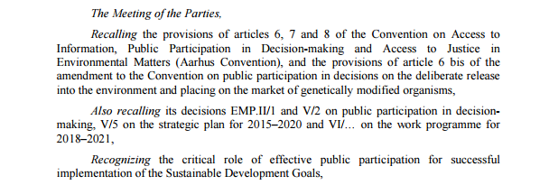 |
| <preamble> <container name=""> <blockContainer eId="blockContainer_10" refersTo="#summary">
<heading>Summary</heading>
<p>The present document sets out a draft decision on promoting effective public
participation in decision-making. </p>
<p>In view of its mandate to "make such proposals and recommendations to the Meeting of the
Parties as it considers necessary for the achievement of the purposes of the Convention"
(ECE/MP.PP/2/Add.15, para. 2 (d)), at its twentieth meeting (Geneva, 15–17 June 2016),
the Working Group of the Parties to the Convention on Access to Information, Public
Participation in Decision-making and Access to Justice in Environmental Matters
requested the Bureau to prepare a draft decision on promoting effective public
participation in decision-making for consideration by the Meeting of the Parties at its
sixth session (Montenegro, 11–14 September 2017). </p> (omissis) </blockContainer> <formula name="enactingAuthority" refersTo="#meetingParties">
<p>The Meeting of the Parties</p>
</formula> <blockContainer eId="blockContainer_1">
<block eId="block_1" name="preamble"> Recalling the provisions of articles 6, 7 and 8 of the
Convention on Access to Information, Public Participation in Decision-making and Access
to Justice in Environmental Matters (Aarhus Convention), and the provisions of article 6
bis of the amendment to the Convention on public participation in decisions on the
deliberate release into the environment and placing on the market of genetically
modified organisms, </block>
<block eId="block_2" name="preamble"> Also recalling its decisions EMP.II/1 and V/2 on
public participation in decision-making, V/5 on the strategic plan for 2015–2020 and
VI/… on the work programme for 2018–2021, </block>
</blockContainer> </container> </preamble> |
notes | The summary has been modelled as part of the preamble. |
modelling | <preamble> <container name=""> <blockContainer>
<componentRef showAs="Summary" src="#comp_1__comp_1"/>
</blockContainer>
<blockContainer eId="blockContainer_1">
<block eId="block_1" name="preamble"> Recalling the provisions of articles 6, 7 and 8 of
the Convention on Access to Information, Public Participation in Decision-making and
Access to Justice in Environmental Matters (Aarhus Convention), and the provisions
of article 6 bis of the amendment to the Convention on public participation in
decisions on the deliberate release into the environment and placing on the market
of genetically modified organisms, </block>
<block eId="block_2" name="preamble"> Also recalling its decisions EMP.II/1 and V/2 on
public participation in decision-making, V/5 on the strategic plan for 2015–2020 and
VI/… on the work programme for 2018–2021, </block>
</blockContainer> <container> </preamble> (omissis) <components>
<component eId="comp_1__comp_1">
<doc name="summary">
<meta> </meta>
<mainBody>
<tblock>
<heading>Summary</heading>
<p>The present document sets out a draft decision on promoting effective
public participation in decision-making. </p>
<p>In view of its mandate to "make such proposals and recommendations to the
Meeting of the Parties as it considers necessary for the achievement of
the purposes of the Convention" (ECE/MP.PP/2/Add.15, para. 2 (d)), at
its twentieth meeting (Geneva, 15–17 June 2016), the Working Group of
the Parties to the Convention on Access to Information, Public
Participation in Decision-making and Access to Justice in Environmental
Matters requested the Bureau to prepare a draft decision on promoting
effective public participation in decision-making for consideration by
the Meeting of the Parties at its sixth session (Montenegro, 11–14
September 2017). </p>
</tblock>
</mainBody>
</doc>
</component> </components> |
notes | We may also model the summary to be a separate document which is referenced and embedded within the preamble using the <componentRef> tag which allow us to clearly separate the "Summary" part from the decision and remove the it when it may not be necessary e.g. after approval. We use the <blockContainer> element that may contain <componentRef> or <documentRef> to refer to the summary component. |
|
source | 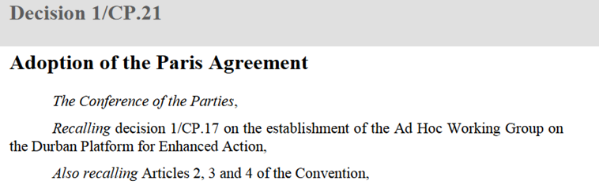 |
modelling | <preamble>
<formula name="enactingAuthority" refersTo="#conferenceParties">
<p>The Conference of the Parties,</p>
</formula>
<block eId="block_11" name="preamble"> Recalling decision 1/CP.17 on the establishment of the Ad Hoc Working Group on the Durban Platform for Enhanced Action, </block>
<block eId="block_12" name="preamble"> Also recalling Articles 2, 3 and 4 of the Convention, </block> (ommissis)
</preamble> |
note | |
|
The main content <mainBody> </mainBody> is meant to include any matter found after the <preamble> up to where the <conclusion> or <attachments> or the end of the document. It contains one or more paragraphs detailing the decision of the organ or the action to be taken.
Decisions may be presented in the form of:
un/numbered paragraphs
that may also have ordered lists and sub-lists
the text may be subdivided by headings and sub-headings
some decisions are structured like resolutions with "preambular" and "operative" paragraphs
<mainBody>
The <mainBody> element may contain all types of AKN groups of elements. In the context of Document Class Deliberative Documents, only hierarchical and block containers elements are allowed. See the table below:
AKN4UN
Doc Class | AKN
document type | body element | Supported elements |
Deliberative Documents | <statement> | <mainBody> | Element group: hierElements alinea, article, book, chapter, clause, division, hcontainer, indent, level, list, paragraph, part, point, proviso, rule, section, subchapter, subclause, subdivision, sublist, subparagraph, subpart, subrule, subsection, subtitle, title, tome, transitional |
Element group: blockElements block, blockContainer, blockList, foreign, ol, p, table, tblock, toc, ul |
For the content model used by hierarchical and block containers, please see AKN4UN Guidelines relevant sections.
|
source | 
|
modelling | <paragraph eId="para_1">
<content>
<p> At its 81st plenary meeting, on 5March 2015, the General Assembly, on the proposal of its President,29 recalling its resolutions 66/199 of 22December 2011, 67/209 of 21December 2012, 68/211 of 20December 2013 and 69/219 of 19December 2014, decided that the conference on disaster risk reduction, to be held in Sendai, Japan, from 14 to 18March 2015, should henceforth be known as the Third United Nations World Conference on Disaster Risk Reduction. </p>
</content>
</paragraph> |
notes | |
|
|
source | 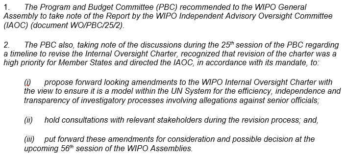 |
modelling | <paragraph eId="para_1">
<num>1.</num>
<content>
<p> The Program and Budget Committee (PBC) recommended to the WIPO General Assembly to
take note of the Report by the WIPO Independent Advisory Oversight Committee (IAOC)
(document WO/PBC/25/2). </p>
</content>
</paragraph>
<paragraph eId="para_2">
<num>2.</num>
<list eId="para_2__list_1">
<intro> <p> The PBC also, taking note of the discussions during the 25th session of the PBC
regarding a timeline to revise the Internal Oversight Charter, recognized that
revision of the charter was a high priority for Member States and directed the IAOC,
in accordance with its mandate, to: </p> </intro>
<point eId="para_2__list_1_point_i">
<num>(i) </num>
<content>
<p> propose forward looking amendments to the WIPO Internal Oversight
Charter with the view to ensure it is a model within the UN System for
the efficiency, independence and transparency of investigatory processes
involving allegations against senior officials; </p>
</content>
</point>
<point eId=" para_2__list_1_point_ii">>
<num>(ii) </num>
<content>
<p> hold consultations with relevant stakeholders during the revision
process; and, </p>
</content>
</point>
<point eId=" para_2__list_1_point_iii">>
<num>(iii) </num>
<content>
<p> put forward these amendments for consideration and possible decision at
the upcoming 56th session of the WIPO Assemblies. </p>
</content>
</point>
</list>
</paragraph> |
notes | |
|
source |
|
modelling | <paragraph refersTo="#operative" eId="para_1">
<num>1.</num>
<content>
<p> Notes the synthesis report of the Secretary-General on the post-2015 development
agenda, entitled "The road to dignity by 2030: ending poverty, transforming all lives
and protecting the planet"; </p>
</content>
</paragraph>
<paragraph refersTo="#operative" eId="para_2">
<num>2.</num>
<list>
<intro>
<p> Decides that: </p>
</intro>
<point eId="para_2__point_a">
<num>(a)</num>
<content>
<p> The process of intergovernmental negotiations on the post-2015 development
agenda will be in accordance with the rules of procedure and established
practices of the General Assembly and open, transparent and inclusive,
consistent with resolution 69/244; </p>
</content>
</point>
</list>
</paragraph> |
notes | We use @refersTo to associate specific paragraphs to the operative part. |
|
|
source | 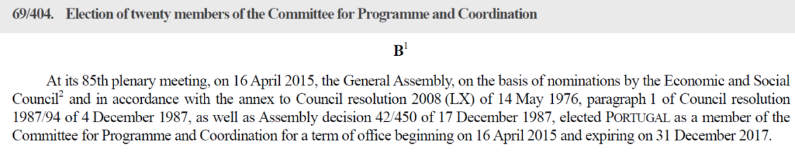 |
modelling | <section eId="sec_B">
<num>B</num>
<paragraph eId="sec_B__para_1">
<content>
<p> At its 85th plenary meeting, on 16April 2015, the General Assembly, on the basis
of nominations by the Economic and Social Council2 and in accordance with the
annex to Council resolution 2008(LX) of 14May 1976, paragraph1 of Council
resolution 1987/94 of 4December 1987, as well as Assembly decision 42/450 of
17December 1987, elected PORTUGAL as a member of the Committee for Programme and
Coordination for a term of office beginning on 16April 2015 and expiring on
31December 2017. </p>
</content>
</paragraph> <paragraph eId="sec_B__para_2">
(omissis)
</section> |
notes | |
|
source |
|
modelling | <paragraph eId="para_140">
<content>
<p> On 15June 2015, the six Main Committees of the General Assembly held meetings in
accordance with rules99(a) and 103 of the rules of procedure of the Assembly for the
purpose of electing their Chairs. </p>
</content>
</paragraph>
<paragraph eId="para_141">
<content>
<p> At the 95thplenary meeting, on 15June 2015, the President of the General Assembly
announced that the following persons had been elected as Chairs of the six Main
Committees of the Assembly at its seventieth session: </p>
<table>
<tr>
<td>
<p>
<organization refersTo="#firstCommittee"> First Committee:
</organization>
</p>
</td>
<td>
<p>
<role refersTo="#chair">
<person refersTo="#mkjgVanOosterom"> Mr.Karel Jan Gustaaf VAN
OOSTEROM </person>( <organization refersTo="#memberNetherlands">
Netherlands </organization>
</role>)</p>
</td>
</tr>
<tr>
<td>
<p>
<organization refersTo="#specialPoliticalDecolonizationCommittee">
Special Political andDecolonization Committee (Fourth Committee):
</organization>
</p>
</td>
<td>
<p>
<role refersTo="#chair">
<person refersTo="#bBowler">Mr.Brian BOWLER</person> ( <organization
refersTo="#memberMalawi"> Malawi </organization>
</role>)</p>
</td>
</tr>
<tr>
<td>
<p>
<organization refersTo="#secondCommittee"> Second Committee:
</organization>
</p>
</td>
<td>
<p>
<role refersTo="#chair">
<person refersTo="#aLogar">Mr.Andrej LOGAR</person>( <organization
refersTo="#memberSlovenia"> Slovenia </organization>
</role>) </p>
</td>
</tr>
</table>
</content>
</paragraph> |
notes | We use the <table> tag here as the content is clearly in tabular form and layout. There are additional qualifiers for person, role and organization which refer to their respective TLC tags. |
|
|
source |
|
modelling | <paragraph eId="para_121">
<content>
<p> At its 97thplenary meeting, on 25June 2015, the General Assembly, on the recommendation
of the Fifth Committee,53 decided to defer until the second part of its resumed
seventieth session consideration of the following documents:
<embeddedStructure refersTo="#referenceToReport">
<blockList eId="part_III__section_5__aliena_1">
<listIntroduction class=”italic”>
<ref href="/akn/un/debateReport/meetingAgenda/xxxx/xxx/!main#item_148"> Item 148<br />
Administrative and budgetary aspects of the financing of the United
Nations peacekeeping operations
</listIntroduction>
<item>
<blockList> <listIntroduction>Closed peacekeeping missions </listIntroduction>
<item>
<ref href="/akn/un/{documentIRIparts}">
Report of the Secretary-General on the updated
financial position of closed peacekeeping missions as at 30June
2014 </ref>
</item>
<item>
<ref href="/akn/un/{documentIRIparts}"> Related report of the Advisory Committee on
Administrative and Budgetary Questions </ref>
</item>
<item>(..omissis...)</item>
</blockList>
</item>
</blockList>
</embeddedStructure> </p>
</content>
</paragraph> In the metadata: <TLCReference eId="referenceToReport" name="reportRef" href="/akn/un/{documentIRIparts}" showAs=""/> |
notes | We use <embeddedStructure> here because the text in question is from a different document, different from the main document. To explicitly depict this in the mark-up, we use the <embeddedStructure> tag and import the fragment of text from the referenced document being quoted. The text is imported with its own structure, so to distinguish that from the main document we need to place it in <embeddedStructure>. |
|
source | 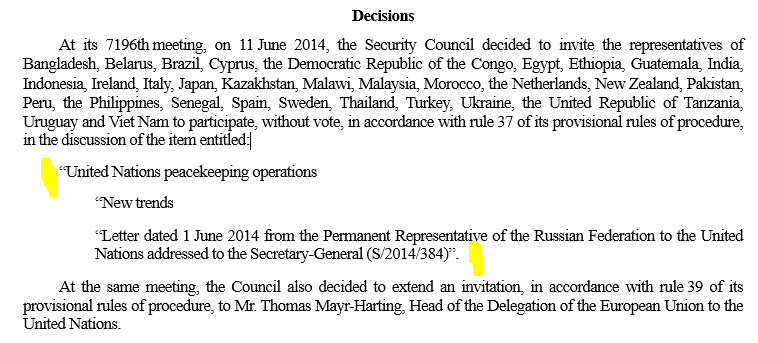 |
modelling | <paragraph eId="para_91">
<content>
<p> At its <ref href="/akn/un/{documentIRIparts}">7196th meeting</ref>, on 11 June 2014, the Security Council
decided to invite the representatives of Bangladesh, Belarus, Brazil, Cyprus, the
Democratic Republic of the Congo, Egypt, Ethiopia, Guatemala, India, Indonesia, Ireland,
Italy, Japan, Kazakhstan, Malawi, Malaysia, Morocco, the Netherlands, New Zealand,
Pakistan, Peru, the Philippines, Senegal, Spain, Sweden, Thailand, Turkey, Ukraine, the
United Republic of Tanzania, Uruguay and Viet Nam to participate, without vote, in
accordance with rule 37 of its provisional rules of procedure, in the discussion of the
item entitled: <embeddedStructure inlineQuote=""" endQuote=""">
<chapter eId="{actual_ID}">
<heading>United Nations peacekeeping operations</heading>
<division eId="{actual_ID}"> New trends </division>
<division eId="{actual_ID}">
<heading>Letter dated 1 June 2014 from the
Permanent Representative of the Russian Federation to the United
Nations addressed to the Secretary-General
(S/2014/384)</heading>
</division>
</chapter>
</embeddedStructure>.
</p>
<p> At the same meeting, the Council also decided to extend an invitation, in accordance
with rule 39 of its provisional rules of procedure, to Mr. Thomas Mayr-Harting, Head of
the Delegation of the European Union to the United Nations. </p>
</content>
</paragraph> |
notes | We use <embeddedStructure> here as the text is quoted, and is a kind of sub-structure within the main text of the document. The @innerQuote parameter of the <embeddedStructure> element puts a starting quotation mark for every item in the structure – it corresponds to the quotation mark highlighted in yellow in the image below. The inner text has an additional ending quotation marks for the sentence, and that is expressed in the mark-up using the <embeddedStructureag that takes the @endQuote parameter. |
Decisions body may include:
Text of letter sent or received by the body taking the decision.
Whole text of "agenda" or "programme of work" that it may have approved.
Amending instructions.
References to agenda items.
Reference to documents.
| | | |
source (includes letter) |
| | | |
modelling | Option 1 – we may use <embeddedStructure> and place the paragraphs of the letter directly inside using <p> tags: <paragraph eId="para_101">
<content>
<p> On 11 October 2013, the President of the Security Council addressed the following
letter to the Secretary-General: <embeddedStructure>
<p> I have the honour to inform you that your letter dated 7 October 2013 concerning the
establishment of a Joint Mission of the Organization for the Prohibition of Chemical Weapons
and the United Nations to eliminate the chemical weapons programme of the Syrian Arab
Republic has been brought to the attention of the members of the Security Council. </p>
<p> After due consideration, the Council authorizes the establishment of the Organization for
the Prohibition of Chemical Weapons-United Nations Joint Mission as proposed in your letter.
</p>
</embeddedStructure>
</p>
</content>
</paragraph> Option 2 – you may treat the letter as logical component, and place it in <components> and use <componentRef> to refer to the letter logical component: <paragraph eId="para_101">
<content>
<p> On 11 October 2013, the President of the Security Council addressed the following letter to the Secretary-General: <embeddedStructure>
<componentRef showAs="letter" src="#comp_1"/>
</embeddedStructure>
</p>
</content>
</paragraph> …. <components>
<component eId="comp_1">
<doc name="letter">
<meta> </meta>
<mainBody>
<p>I have the honour to inform you that your letter dated 7 October 2013 concerning the
establishment of a Joint Mission of the Organization for the Prohibition of Chemical
Weapons and the United Nations to eliminate the chemical weapons programme of the Syrian
Arab Republic has been brought to the attention of the members of the Security Council. </p>
<p>After due consideration, the Council authorizes the establishment of the Organization for
the Prohibition of Chemical Weapons-United Nations Joint Mission as proposed in your
letter. </p>
</mainBody>
</doc> </component>
</components> | | | |
notes | | | | |
| | |
source (include agenda) |
| | |
modelling | Option 1 – we may use <embeddedStructure> and refer to the agenda document via its IRI, using <documentRef> to an external XML physical file: <paragraph>
<content>
<p> At its 23rd plenary meeting, on 12 June 2014, the Economic and Social Council
approved the provisional agenda and documentation for the fifty-third session of the
Commission for Social Development as set out below: <embeddedStructure>
<documentRef href="/akn/debateReport/report/{documentIRIparts}" showAs="agenda"/>
</embeddedStructure>
</p>
</content>
</paragraph> Option 2 – we may use <embeddedStructure> and embed the agenda document as a logical component of the document in <components> and refer to it using <documentRef> <paragraph>
<content>
<p> At its 23rd plenary meeting, on 12 June 2014, the Economic and Social Council
approved the provisional agenda and documentation for the fifty-third session of the
Commission for Social Development as set out below: <embeddedStructure> <documentRef showAs="" src="#comp_1"/> </embeddedStructure>
</p>
</content>
</paragraph> <components>
<component eId="comp_1"> <doc name="agenda"> <meta></meta> <preface> <p> PROVISIONAL AGENDA AND DOCUMENTATION FOR THE FIFTY-THIRD SECTION OF THE COMMISSION FOR SOCIAL DEVELOPMENT </p> </preface> <mainBody> <point eId="point_1"> <num>1.</num> <content> <p>Election of officers. </p> </content> </point> <point eId="point_2"> <num>2.</num> <content> <p>Adoption of the agenda and other organizational matters.</p> </content> </point> </component>
</components> | | |
| |
| source (amend) | 
|
| modelling | <paragraph eId="para_1"> <content> <p> <mod> At its <ref href="/akn/un/{documentIRIparts}">46th plenary meeting</ref>, on 16 July 2014, the Economic and Social Council decided to approve the amendment to the rules of procedure of the United Nations Group of Experts on Geographical Names proposed by the Group of Experts, whereby section XII, rule 37, is replaced with the following text: "<quotedStructure> <chapter eId="chp_XII"> <num>XII.</num> <heading>Public meetings</heading> <rule eId="rule_37"> <num>Rule 37</num> <content> <p> The meetings of the Group of Experts and meetings of its working groups shall be in public, unless it decides otherwise. </p> </content> </rule> </chapter> </quotedStructure>" </mod> </p> </content> </paragraph> |
| note | We use <quotedStructure> here instead of <embeddedStructure> even if they are similar in structure because quoted Structure is explicitly meant to be used for quoting text and structures with respect to modificaitons. |
| |
| source | 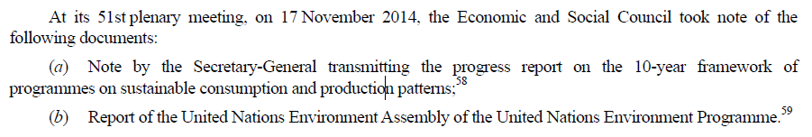 | |
| modelling | <blockList> <listIntroduction> <p> At its 51st plenary meeting, on 17 November 2014, the Economic and Social
Council took note of the following documents: </p> </listIntroduction>
<item eId="para_1__item_a">
<num>(a)</num>
<p> Note by the Secretary-General transmitting the progress report on
the 10-year framework of programmes on sustainable consumption and
production patterns; </p>
</item>
<item eId="para_1__item_b">
<num>(b)</num>
<p> Report of the United Nations Environment Assembly of the United
Nations Environment Programme. </p>
</item>
</blockList>
</paragraph>
| |
| | |
| |
source |
| |
modelling | <section eId="sec_A">
<num>A</num>
<chapter eId="sec_A__chp_1">
<content>
<p> At its 12th plenary meeting, on 23 April 2014, the Economic and Social Council took the following action with regard to vacancies in the subsidiary and related bodies: </p>
</content>
</chapter>
<chapter eId="sec_A__chp_2">
<heading>Elections</heading>
<division eId="sec_A__chp_2__dvs__1">
<heading>COMMISSION ON POPULATION AND DEVELOPMENT</heading>
<paragraph eId="sec_A__chp_2__dvs__1__para_1">
<content>
<p> The Council elected the following six Member States to the Commission on Population and Development for a four-year term beginning at the first meeting of the forty-ninth session of the Commission, in 2015, and expiring at the close of its fifty-second session, in 2019: BELARUS, BOLIVIA (PLURINATIONAL STATE OF), BURUNDI, IRAN (ISLAMIC REPUBLIC OF), PHILIPPINES and SIERRA LEONE. </p> </content>
</paragraph>
<paragraph eId="sec_A__chp_2__dvs__1__para_2">
<content>
<p> The Council postponed the election of one member from Latin American and Caribbean States and one member from Western European and other States for a four-year term beginning at the first meeting of the forty-ninth session of the Commission and expiring at the close of its fifty-second session. </p> </content>
</paragraph>
</division>
</chapter>
</section> | |
note | |
| |